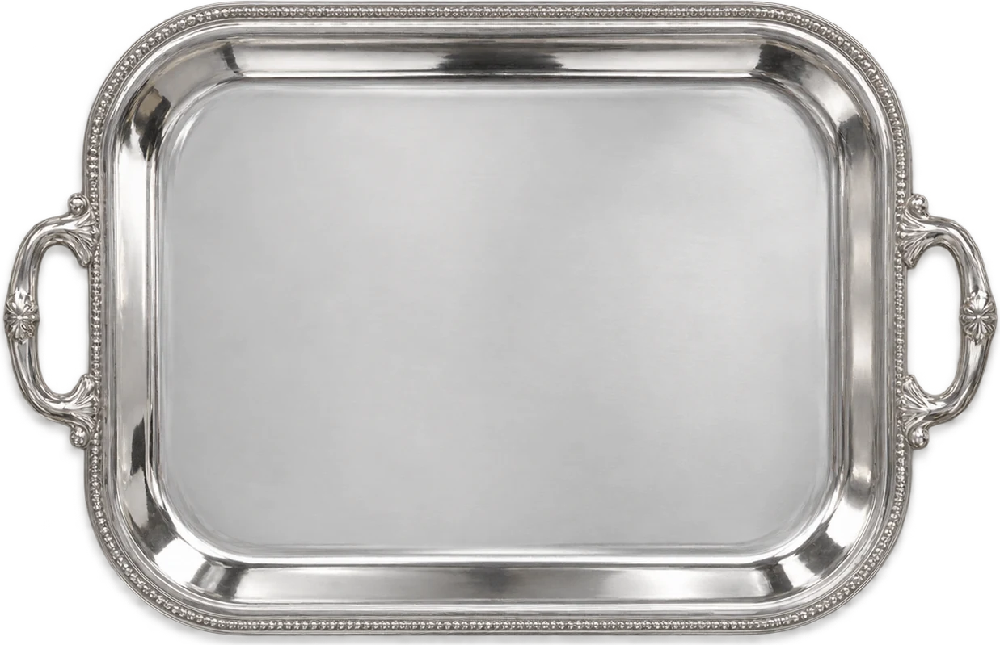

나만의 트레이 꾸미기
Artboard 01 · Your everyday still life
Silver Tray Studio ✳︎
↶
↷
↗
↓
이미지 저장
a little still life
✳︎

오른쪽 소품을 눌러 트레이를 꾸며보세요.
a collection of little things, made by you ♡
▣
복제
⇆
반전
↑
앞으로
↓
뒤로
✕
삭제
↻
비우기